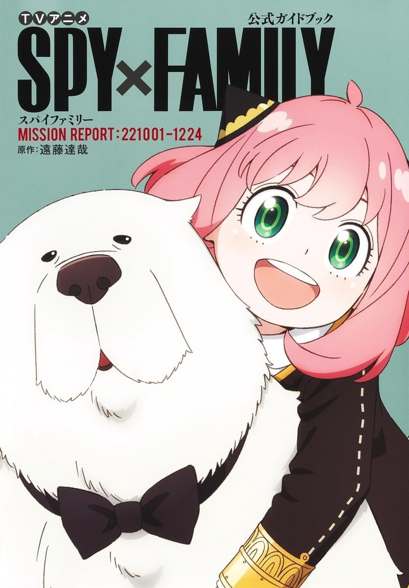
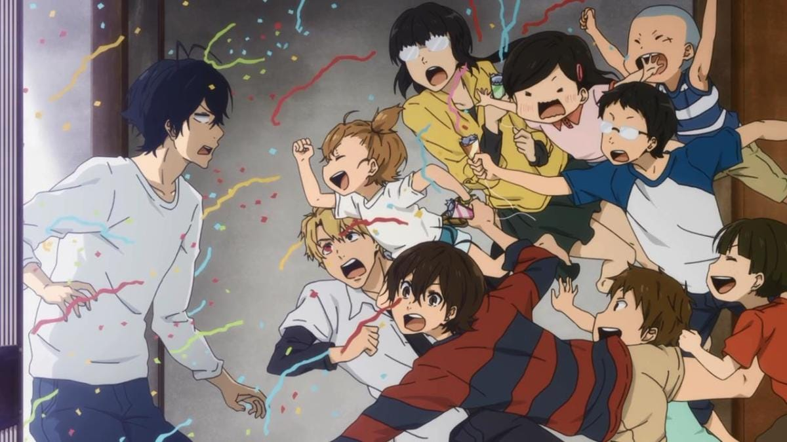
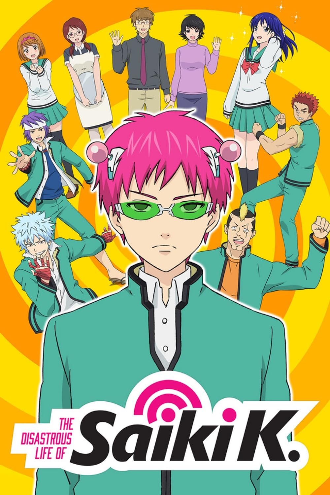
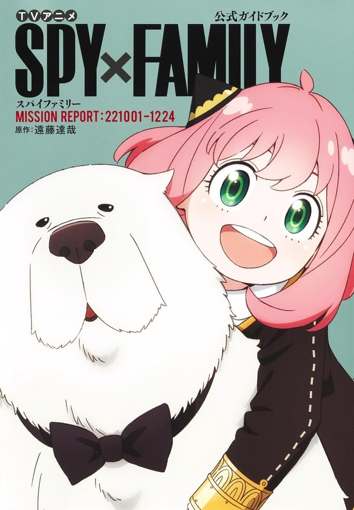
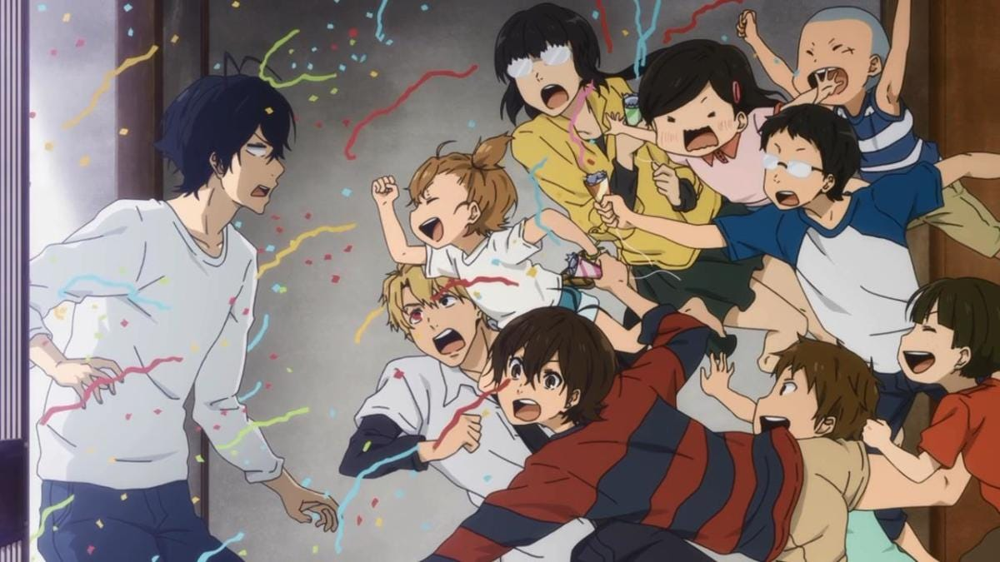
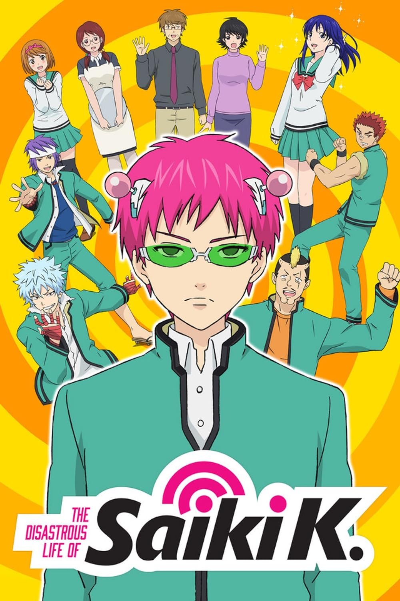

Genres
Comedy
Comedy - The most predominantly Used Anime genres yet is almost never used on its own, as its name implies deals with usually light humor although it is very easily overdone. This is is usually achieved by the use of Props, Character Designs and the composition of the Japanese Language.
-
 





Popular Comedy Anime
Noragami
The series follows a poor deity named Yato, who desires to become a famous god, and his adventures with a human girl named Hiyori, whose spirit frequently leaves her body, and Yukine, a young wandering spirit whom he adopts as his weapon.
One Piece
ONE PIECE is a legendary high-seas quest unlike any other. Luffy is a young adventurer who has longed for a life of freedom ever since he can remember. He sets off from his small village on a perilous journey to find the legendary fabled treasure, ONE PIECE, to become King of the Pirates!
Aiura
The story centers around Amaya, Iwasawa, and Uehara—three "annoying, spirited high school girls with zero motivation"—and their classmates. Their daily life is "what happens when there is nothing happening.